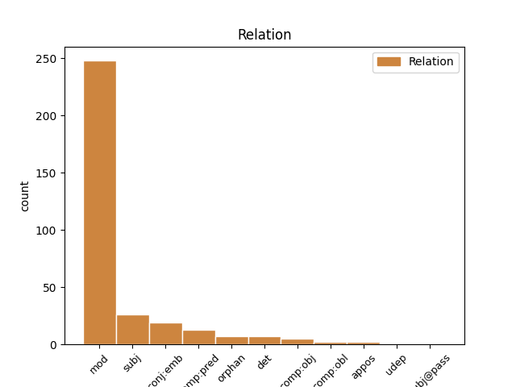
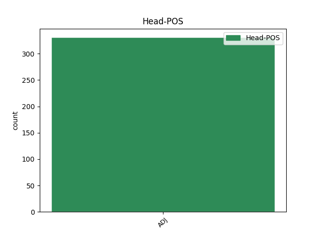
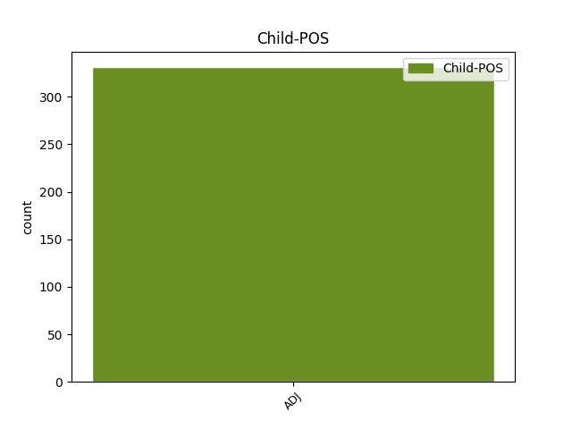

Distribution of features within this leaf



Agreement Rules sorted by frequency.
- When the dependent token is the modifer(mod) of the head token, and the head token is ADJ and the dependent token is ADJ.
1 Ymisk ymisk ADJ _ Definite=Ind|Degree=Pos|Gender=Neut|Number=Sing 2 mod _ _
2 sløg sløg ADJ _ Definite=Ind|Degree=Pos|Gender=Neut|Number=Sing 0 _ _ _
3 av _ _ _ _ 0 _ _ _
4 plantum _ _ _ _ 0 _ _ _
5 og _ _ _ _ 0 _ _ _
6 trøum _ _ _ _ 0 _ _ _
7 eru _ _ _ _ 0 _ _ _
8 gjøgnum _ _ _ _ 0 _ _ _
9 áratúsund _ _ _ _ 0 _ _ _
10 flutt _ _ _ _ 0 _ _ _
11 úr _ _ _ _ 0 _ _ _
12 einum _ _ _ _ 0 _ _ _
13 heimsparti _ _ _ _ 0 _ _ _
14 í _ _ _ _ 0 _ _ _
15 annan _ _ _ _ 0 _ _ _
16 . _ _ _ _ 0 _ _ _
1 Samlagstryggingin _ _ _ _ 0 _ _ _
2 kann _ _ _ _ 0 _ _ _
3 eisini _ _ _ _ 0 _ _ _
4 verða _ _ _ _ 0 _ _ _
5 teknað _ _ _ _ 0 _ _ _
6 sum _ _ _ _ 0 _ _ _
7 sjálvboðin _ _ _ _ 0 _ _ _
8 trygging _ _ _ _ 0 _ _ _
9 fyri _ _ _ _ 0 _ _ _
10 tímalønt _ _ _ _ 0 _ _ _
11 , _ _ _ _ 0 _ _ _
12 sum _ _ _ _ 0 _ _ _
13 í _ _ _ _ 0 _ _ _
14 miðal _ _ _ _ 0 _ _ _
15 arbeiða _ _ _ _ 0 _ _ _
16 minni _ _ _ _ 0 _ _ _
17 enn _ _ _ _ 0 _ _ _
18 15 _ _ _ _ 0 _ _ _
19 tímar _ _ _ _ 0 _ _ _
20 um _ _ _ _ 0 _ _ _
21 vikuna _ _ _ _ 0 _ _ _
22 , _ _ _ _ 0 _ _ _
23 ella _ _ _ _ 0 _ _ _
24 eru _ _ _ _ 0 _ _ _
25 avloysarar _ _ _ _ 0 _ _ _
26 undir _ _ _ _ 0 _ _ _
27 sjúku _ _ _ _ 0 _ _ _
28 , _ _ _ _ 0 _ _ _
29 frítíð _ _ _ _ 0 _ _ _
30 o.l _ _ _ _ 0 _ _ _
31 . _ _ _ _ 0 _ _ _
32 ella _ _ _ _ 0 _ _ _
33 til _ _ _ _ 0 _ _ _
34 annað _ _ _ _ 0 _ _ _
35 fyribils _ _ _ _ 0 _ _ _
36 arbeiði _ _ _ _ 0 _ _ _
37 , _ _ _ _ 0 _ _ _
38 sum sums ADJ _ Case=Nom|Gender=Neut|Number=Sing 40 subj _ _
39 varar _ _ _ _ 0 _ _ _
40 minni minnis ADJ _ Case=Acc|Gender=Neut|Number=Sing 0 _ _ _
41 enn _ _ _ _ 0 _ _ _
42 3 _ _ _ _ 0 _ _ _
43 mánaðir _ _ _ _ 0 _ _ _
44 . _ _ _ _ 0 _ _ _
1 Eyguni _ _ _ _ 0 _ _ _
2 møðast _ _ _ _ 0 _ _ _
3 av _ _ _ _ 0 _ _ _
4 reyðum _ _ _ _ 0 _ _ _
5 , _ _ _ _ 0 _ _ _
6 gulum gulu ADJ _ Definite=Ind|Degree=Pos|Gender=Neut|Number=Sing 0 _ _ _
7 og _ _ _ _ 0 _ _ _
8 bláum bláum ADJ _ Case=Dat|Gender=Neut|Number=Sing 6 conj:emb _ _
9 karmellupappíri _ _ _ _ 0 _ _ _
10 , _ _ _ _ 0 _ _ _
11 meðan _ _ _ _ 0 _ _ _
12 lukturin _ _ _ _ 0 _ _ _
13 av _ _ _ _ 0 _ _ _
14 kleynum _ _ _ _ 0 _ _ _
15 og _ _ _ _ 0 _ _ _
16 jødakakum _ _ _ _ 0 _ _ _
17 verður _ _ _ _ 0 _ _ _
18 hangandi _ _ _ _ 0 _ _ _
19 í _ _ _ _ 0 _ _ _
20 minninum _ _ _ _ 0 _ _ _
21 langt _ _ _ _ 0 _ _ _
22 inn _ _ _ _ 0 _ _ _
23 í _ _ _ _ 0 _ _ _
24 vaksnamannalívið _ _ _ _ 0 _ _ _
25 . _ _ _ _ 0 _ _ _
1 Tær _ _ _ _ 0 _ _ _
2 tríggjar _ _ _ _ 0 _ _ _
3 landsstýriskvinnurnar _ _ _ _ 0 _ _ _
4 Annika _ _ _ _ 0 _ _ _
5 Olsen _ _ _ _ 0 _ _ _
6 , _ _ _ _ 0 _ _ _
7 Rósa _ _ _ _ 0 _ _ _
8 Samuelsen _ _ _ _ 0 _ _ _
9 og _ _ _ _ 0 _ _ _
10 Helena _ _ _ _ 0 _ _ _
11 Dam _ _ _ _ 0 _ _ _
12 á _ _ _ _ 0 _ _ _
13 Neystabø _ _ _ _ 0 _ _ _
14 høvdu _ _ _ _ 0 _ _ _
15 hvør _ _ _ _ 0 _ _ _
16 sítt _ _ _ _ 0 _ _ _
17 upplegg _ _ _ _ 0 _ _ _
18 um _ _ _ _ 0 _ _ _
19 evnini _ _ _ _ 0 _ _ _
20 Tá _ _ _ _ 0 _ _ _
21 tær _ _ _ _ 0 _ _ _
22 vóru _ _ _ _ 0 _ _ _
23 lidnar _ _ _ _ 0 _ _ _
24 var _ _ _ _ 0 _ _ _
25 orðið orð ADJ _ Definite=Ind|Gender=Neut|Number=Sing|VerbForm=Part 0 _ _ _
26 frítt frít ADJ _ Definite=Ind|Degree=Pos|Gender=Neut|Number=Sing 25 comp:pred _ _
27 . _ _ _ _ 0 _ _ _
1 Vinningur _ _ _ _ 0 _ _ _
2 merkir _ _ _ _ 0 _ _ _
3 í _ _ _ _ 0 _ _ _
4 hesum _ _ _ _ 0 _ _ _
5 stykki _ _ _ _ 0 _ _ _
6 tann _ _ _ _ 0 _ _ _
7 upphædd _ _ _ _ 0 _ _ _
8 , _ _ _ _ 0 _ _ _
9 sum sums ADJ _ Case=Nom|Gender=Neut|Number=Sing 0 _ _ _
10 handilsvirðið handilsvirðið ADJ _ Case=Acc|Degree=Pos|Gender=Neut|Number=Sing|Strength=Strong 9 orphan _ _
11 , _ _ _ _ 0 _ _ _
12 tá _ _ _ _ 0 _ _ _
13 flutt _ _ _ _ 0 _ _ _
14 verður _ _ _ _ 0 _ _ _
15 , _ _ _ _ 0 _ _ _
16 fer _ _ _ _ 0 _ _ _
17 upp _ _ _ _ 0 _ _ _
18 um _ _ _ _ 0 _ _ _
19 restvirðið _ _ _ _ 0 _ _ _
20 nú _ _ _ _ 0 _ _ _
21 , _ _ _ _ 0 _ _ _
22 gjørdar _ _ _ _ 0 _ _ _
23 avskrivingar _ _ _ _ 0 _ _ _
24 íroknaðar _ _ _ _ 0 _ _ _
25 . _ _ _ _ 0 _ _ _
1 Haldi _ _ _ _ 0 _ _ _
2 tað _ _ _ _ 0 _ _ _
3 er _ _ _ _ 0 _ _ _
4 stór _ _ _ _ 0 _ _ _
5 skomm _ _ _ _ 0 _ _ _
6 fyri _ _ _ _ 0 _ _ _
7 eina _ _ _ _ 0 _ _ _
8 so _ _ _ _ 0 _ _ _
9 stóra _ _ _ _ 0 _ _ _
10 bygd _ _ _ _ 0 _ _ _
11 sum _ _ _ _ 0 _ _ _
12 Vestmanna _ _ _ _ 0 _ _ _
13 als _ _ _ _ 0 _ _ _
14 einki einki ADJ _ Case=Nom|Gender=Masc|Number=Sing 15 det _ _
15 spælipláss spælipláss ADJ _ Case=Nom|Gender=Masc|Number=Sing 0 _ _ _
16 at _ _ _ _ 0 _ _ _
17 hava _ _ _ _ 0 _ _ _
18 . _ _ _ _ 0 _ _ _
1 Og _ _ _ _ 0 _ _ _
2 tað _ _ _ _ 0 _ _ _
3 er _ _ _ _ 0 _ _ _
4 tí _ _ _ _ 0 _ _ _
5 óforsvarligt _ _ _ _ 0 _ _ _
6 fyri _ _ _ _ 0 _ _ _
7 tær _ _ _ _ 0 _ _ _
8 kommunur _ _ _ _ 0 _ _ _
9 , _ _ _ _ 0 _ _ _
10 sum _ _ _ _ 0 _ _ _
11 hóast _ _ _ _ 0 _ _ _
12 alt alt ADJ _ Gender=Neut|Number=Sing|Person=3|PronType=Prs 14 comp:obj _ _
13 hava _ _ _ _ 0 _ _ _
14 lagt leggje ADJ _ Definite=Ind|Gender=Neut|Number=Sing|VerbForm=Part 0 _ _ _
15 saman _ _ _ _ 0 _ _ _
16 , _ _ _ _ 0 _ _ _
17 at _ _ _ _ 0 _ _ _
18 vit _ _ _ _ 0 _ _ _
19 bíðja _ _ _ _ 0 _ _ _
20 og _ _ _ _ 0 _ _ _
21 bíðja _ _ _ _ 0 _ _ _
22 í _ _ _ _ 0 _ _ _
23 áravís _ _ _ _ 0 _ _ _
24 , _ _ _ _ 0 _ _ _
25 áðrenn _ _ _ _ 0 _ _ _
26 vit _ _ _ _ 0 _ _ _
27 leggja _ _ _ _ 0 _ _ _
28 øki _ _ _ _ 0 _ _ _
29 út _ _ _ _ 0 _ _ _
30 til _ _ _ _ 0 _ _ _
31 kommunurnar _ _ _ _ 0 _ _ _
32 at _ _ _ _ 0 _ _ _
33 umsita _ _ _ _ 0 _ _ _
34 . _ _ _ _ 0 _ _ _
1 Alment _ _ _ _ 0 _ _ _
2 mál _ _ _ _ 0 _ _ _
3 : _ _ _ _ 0 _ _ _
4 ungarskt ungarsk ADJ _ Definite=Ind|Degree=Pos|Gender=Neut|Number=Sing 0 _ _ _
5 ( _ _ _ _ 0 _ _ _
6 magyariskt magyarisk ADJ _ Definite=Ind|Degree=Pos|Gender=Neut|Number=Sing 4 appos _ _
7 ) _ _ _ _ 0 _ _ _
8 Átrúnaður _ _ _ _ 0 _ _ _
9 : _ _ _ _ 0 _ _ _
10 kristindómur _ _ _ _ 0 _ _ _
11 93 _ _ _ _ 0 _ _ _
12 % _ _ _ _ 0 _ _ _
13 , _ _ _ _ 0 _ _ _
14 aðrir _ _ _ _ 0 _ _ _
15 7 _ _ _ _ 0 _ _ _
16 % _ _ _ _ 0 _ _ _
17 Stýrirlag _ _ _ _ 0 _ _ _
18 : _ _ _ _ 0 _ _ _
19 fólkaræði _ _ _ _ 0 _ _ _
20 , _ _ _ _ 0 _ _ _
21 fleirflokkaskipan _ _ _ _ 0 _ _ _
22 Nám _ _ _ _ 0 _ _ _
23 ◦ _ _ _ _ 0 _ _ _
24 Hoyvíksvegi _ _ _ _ 0 _ _ _
25 72 _ _ _ _ 0 _ _ _
26 ◦ _ _ _ _ 0 _ _ _
27 Tórshavn _ _ _ _ 0 _ _ _
28 ◦ _ _ _ _ 0 _ _ _
29 Tel _ _ _ _ 0 _ _ _
30 . _ _ _ _ 0 _ _ _
Disagree Examples:
1 Kunngjørt kunngjøre ADJ _ Definite=Ind|Degree=Pos|Gender=Neut|Number=Sing 0 _ _ _
2 verður _ _ _ _ 0 _ _ _
3 seinni seinni ADJ _ Definite=Ind|Gender=Masc|Number=Sing 1 comp:obj _ _
4 , _ _ _ _ 0 _ _ _
5 nær _ _ _ _ 0 _ _ _
6 og _ _ _ _ 0 _ _ _
7 hvar _ _ _ _ 0 _ _ _
8 tey _ _ _ _ 0 _ _ _
9 umførini _ _ _ _ 0 _ _ _
10 verða _ _ _ _ 0 _ _ _
11 . _ _ _ _ 0 _ _ _
1 Vanliga vanlig ADJ _ Case=Acc|Degree=Pos|Gender=Neut|Number=Sing|Strength=Strong 2 subj _ _
2 verða verð ADJ _ Case=Nom|Degree=Pos|Gender=Fem|Number=Sing|Strength=Strong 0 _ _ _
3 allir _ _ _ _ 0 _ _ _
4 bygningarnir _ _ _ _ 0 _ _ _
5 , _ _ _ _ 0 _ _ _
6 stórir _ _ _ _ 0 _ _ _
7 sum _ _ _ _ 0 _ _ _
8 smáir _ _ _ _ 0 _ _ _
9 , _ _ _ _ 0 _ _ _
10 væl _ _ _ _ 0 _ _ _
11 niðurgrivnir _ _ _ _ 0 _ _ _
12 í _ _ _ _ 0 _ _ _
13 føroyska _ _ _ _ 0 _ _ _
14 landsslagið _ _ _ _ 0 _ _ _
15 , _ _ _ _ 0 _ _ _
16 men _ _ _ _ 0 _ _ _
17 soleiðis _ _ _ _ 0 _ _ _
18 verður _ _ _ _ 0 _ _ _
19 ikki _ _ _ _ 0 _ _ _
20 í _ _ _ _ 0 _ _ _
21 hesi _ _ _ _ 0 _ _ _
22 byggi _ _ _ _ 0 _ _ _
23 verkætlanini _ _ _ _ 0 _ _ _
24 . _ _ _ _ 0 _ _ _
1 Fíggjarstýringin _ _ _ _ 0 _ _ _
2 skal _ _ _ _ 0 _ _ _
3 fara _ _ _ _ 0 _ _ _
4 fram _ _ _ _ 0 _ _ _
5 í _ _ _ _ 0 _ _ _
6 samsvari _ _ _ _ 0 _ _ _
7 við _ _ _ _ 0 _ _ _
8 fíggjarreglurnar _ _ _ _ 0 _ _ _
9 , _ _ _ _ 0 _ _ _
10 ið _ _ _ _ 0 _ _ _
11 eru _ _ _ _ 0 _ _ _
12 ásettar _ _ _ _ 0 _ _ _
13 av _ _ _ _ 0 _ _ _
14 Ráðharraráði _ _ _ _ 0 _ _ _
15 Norðurlanda _ _ _ _ 0 _ _ _
16 og _ _ _ _ 0 _ _ _
17 sambært sambært ADJ _ Definite=Ind|Degree=Pos|Gender=Neut|Number=Sing 18 mod _ _
18 teimum teimum ADJ _ Case=Dat|Gender=Masc|Number=Plur 0 _ _ _
19 roknskaparreglum _ _ _ _ 0 _ _ _
20 , _ _ _ _ 0 _ _ _
21 sum _ _ _ _ 0 _ _ _
22 eru _ _ _ _ 0 _ _ _
23 ásettar _ _ _ _ 0 _ _ _
24 fyri _ _ _ _ 0 _ _ _
25 stovnin _ _ _ _ 0 _ _ _
26 . _ _ _ _ 0 _ _ _
1 Hví _ _ _ _ 0 _ _ _
2 eru _ _ _ _ 0 _ _ _
3 gleðiboðini _ _ _ _ 0 _ _ _
4 , _ _ _ _ 0 _ _ _
5 ið _ _ _ _ 0 _ _ _
6 hirðarnir _ _ _ _ 0 _ _ _
7 fingu _ _ _ _ 0 _ _ _
8 á _ _ _ _ 0 _ _ _
9 sinni _ _ _ _ 0 _ _ _
10 , _ _ _ _ 0 _ _ _
11 so _ _ _ _ 0 _ _ _
12 stór stórs ADJ _ Case=Nom|Gender=Fem|Number=Sing 0 _ _ _
13 og _ _ _ _ 0 _ _ _
14 vælsignað vælsignað ADJ _ Aspect=Perf|Case=Nom|Gender=Neut|Number=Sing|Strength=Strong|Tense=Past|VerbForm=Part|Voice=Pass 12 conj:emb _ _
15 . _ _ _ _ 0 _ _ _
1 Veðrasteypið _ _ _ _ 0 _ _ _
2 – _ _ _ _ 0 _ _ _
3 veðrahorn _ _ _ _ 0 _ _ _
4 úr _ _ _ _ 0 _ _ _
5 sjálvum _ _ _ _ 0 _ _ _
6 Tjørnuvíksstakki _ _ _ _ 0 _ _ _
7 umsett _ _ _ _ 0 _ _ _
8 við _ _ _ _ 0 _ _ _
9 smíðaðum smíða ADJ _ Case=Dat|Gender=Masc|Number=Plur|Strength=Weak|Tense=Pres|VerbForm=Part|Voice=Act 10 mod _ _
10 ektaðum ektaðu ADJ _ Case=Dat|Gender=Neut|Number=Sing 0 _ _ _
11 silvuri _ _ _ _ 0 _ _ _
12 , _ _ _ _ 0 _ _ _
13 skrivar _ _ _ _ 0 _ _ _
14 Niels _ _ _ _ 0 _ _ _
15 Juul _ _ _ _ 0 _ _ _
16 . _ _ _ _ 0 _ _ _